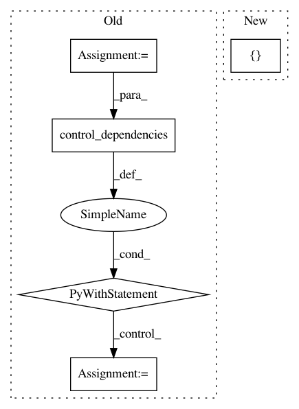

1e339c1a0a186da155c9dc2ab8798075d248dc3e,hypergan/optimizers/curl_optimizer.py,CurlOptimizer,apply_gradients,#CurlOptimizer#Any#Any#Any#,44
Before Change
op5 = tf.group(*[ tf.assign(w,v) for w,v in zip(restored_vars, tmp_vars)])
with tf.get_default_graph().control_dependencies([op5]):
// Flin = gamma * IF - rho * JF + beta * JtF
op7 = tf.group(*[tf.assign_add(gsw, (jg * self._beta)) if jg is not None else tf.no_op() for gsw, jg in zip(gswap, Jgrads)])
with tf.get_default_graph().control_dependencies([op7]):
flin_grads_and_vars = zip(gswap, var_list)
// step 1
op8 = self.optimizer.apply_gradients(list(flin_grads_and_vars).copy(), global_step=global_step, name=name)
with tf.get_default_graph().control_dependencies([op8]):
return tf.no_op()
def _apply_sparse(self, grad, var):
raise NotImplementedError("Sparse gradient updates are not supported.")
def variables(self):
return super().variables() + self.optimizer.variables()
After Change
print("JG NONE", grad)
flin += [grad]
else:
flin += [grad + jg * self._beta]
step3 = list(zip(flin, var_list))
op6 = self.optimizer.apply_gradients(step3.copy(), global_step=global_step, name=name)
with tf.get_default_graph().control_dependencies([op6]):
In pattern: SUPERPATTERN
Frequency: 3
Non-data size: 5
Instances
Project Name: HyperGAN/HyperGAN
Commit Name: 1e339c1a0a186da155c9dc2ab8798075d248dc3e
Time: 2018-11-06
Author: mikkel@255bits.com
File Name: hypergan/optimizers/curl_optimizer.py
Class Name: CurlOptimizer
Method Name: apply_gradients
Project Name: tensorflow/agents
Commit Name: b08a142edf180325b63441ec1b71119c393c4a64
Time: 2019-07-25
Author: oars@google.com
File Name: tf_agents/metrics/tf_metrics_test.py
Class Name: TFMetricsTest
Method Name: testMetric
Project Name: tensorflow/transform
Commit Name: d7a7dd6fe7106f6501e9995a92153f65238bbb47
Time: 2019-06-21
Author: tf-transform-dev@google.com
File Name: tensorflow_transform/analyzers.py
Class Name: QuantilesCombiner
Method Name: _make_get_buckets_callable